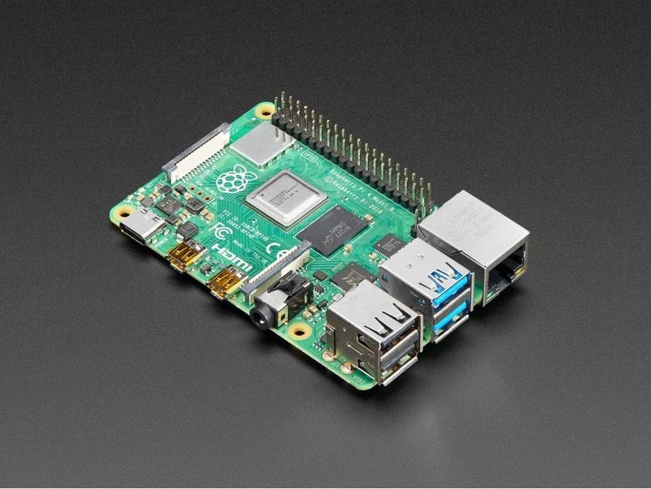

Raspberry Pi 4 Model B: Compact power
By IV - 4/1/2024
Overall Summary
The Raspberry Pi 4 Model B marks a significant leap in the evolution of single-board computers, offering major improvements in CPU performance, memory, and connectivity. This iteration aims to serve as an educational tool or a base for DIY projects and as a potential desktop replacement, especially in its 4GB RAM configuration.
Key Advantages
- Enhanced Performance: With its 1.5GHz 64-bit quad-core ARM Cortex-A72 CPU, the Raspberry Pi 4 introduces a substantial performance boost, approximately three times the speed of its predecessor, making it suitable for more demanding applications.
- Increased RAM Options: Available in 1GB, 2GB, and 4GB LPDDR4 RAM versions, it provides flexibility for users to choose based on their needs, with the highest configuration offering near-desktop level performance.
- Improved Connectivity: Features like 2.4GHz and 5GHz WiFi, Gigabit Ethernet with a dedicated chip, and USB 3.0 ports enhance its capability as a media server, development platform, or general computing device.
- Dual 4K Display Support: With two micro HDMI ports capable of outputting 4K video, it offers a solid setup for dual-monitor setups, improving its utility for developers and media enthusiasts.
Limitations
- Heat Generation: The powerful CPU tends to run hot, even when idle, raising concerns about long-term use without adequate cooling solutions.
- Higher Price for Premium Model: The cost of the 4GB model has risen, potentially putting it out of reach for some budget-conscious users.
- Initial Software Bugs: Early adopters have reported software glitches and compatibility issues, although these are expected to be resolved with updates.
Additional Insights
- Compatibility and Form Factor: Despite its increased capabilities, the Raspberry Pi 4 maintains compatibility with previous models to a great extent, ensuring a smooth transition for existing users. However, rearranging ports and introducing micro HDMI and USB-C require new accessories or adapters.
- Versatile Use Cases: Beyond traditional uses, the Raspberry Pi 4 excels in emulation, media centers, and home server applications, benefiting from its enhanced processing power and connectivity.
Final Verdict
The Raspberry Pi 4 is a quite robust and versatile single-board computer that pushes the boundaries of what these devices can do, making it the new benchmark for enthusiasts, developers, and educators. While the increased performance and features are significant, those with specific needs for embedded projects or existing setups with a Raspberry Pi 3 might not find it a necessary upgrade. Nonetheless, for power users and those seeking a more robust computing experience in a compact form, the Raspberry Pi 4 presents a compelling option.